전자기기기능장 (2011-04-17 기출문제)
1과목: 임의구분
1. 이미터 접지 증폭기에 대한 설명으로 옳지 않은 것은?
- 저주파 증폭에 많이 이용된다.
- 입력과 출력은 동 위상이다.
- 전류증폭도와 전압증폭도가 모두 1 이상이다.
- 베이스 접지 증폭기보다 입력저항은 훨씬 크다.
(정답률: 80%)

2. 명령어 형식 중에서 스택(stack)을 필요로 하는 것은?
- 0-주소 명령어
- 1-주소 명령어
- 2-주소 명령어
- 3-주소 명령어
(정답률: 90%)
3. 그림은 공정제어의 구성도이다. 각부 ①, ②, ③, ④의 명칭이 옳은 것은?
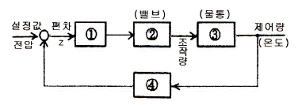
- ① 조절부 ② 조작부 ③ 제어대상공정 ④ 검출
- ① 조작부 ② 조절부 ③ 제어대상공정 ④ 검출
- ① 조절부 ② 조작부 ③ 검출 ④ 제어대상공정
- ① 검출 ② 조작부 ③ 제어대상공정 ④ 조절부
(정답률: 79%)
4. 유전 가열장치로서 식품조리에 이용되는 전자관은?
- 사이러트론
- 클라이스트론
- 아크관
- 마그네트론
(정답률: 84%)
5. 태양전지를 연속적으로 사용하기 위하여 필요한 장치는?
- 변조 장치
- 검파 장치
- 정류 장치
- 축전 장치
(정답률: 87%)
6. 다음과 같이 저항을 직렬로 연결했을 때의 전달함수는?
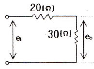
- 0.3
- 0.4
- 0.5
- 0.6
(정답률: 85%)
7. 다음 논리회로와 등가인 논리회로는?
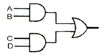
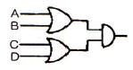
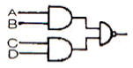
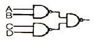
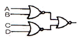
(정답률: 74%)
8. 일정 진폭 및 위상을 상호 변환하여 신호를 싣는 변조방식은?
- ASK
- FSK
- PSK
- QAM
(정답률: 75%)
9. 마이크로프로세서의 데이터 이동에 관한 명령 중 누산기 등의 레지스터 내용을 지정된 메모리 번지로 옮기는 명령은?
- load instruction
- store instruction
- move instruction
- push/pop instruction
(정답률: 87%)
10. 그림의 회로에서 5[Ω]의 저항에 흐르는 전류는 몇 [A] 인가?
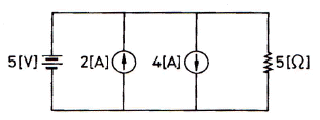
- 1
- 2
- 3
- 4
(정답률: 83%)
11. 수정발진기의 주파수 변동 원인과 방지책의 설명으로 옳지 않은 것은?
- 온도변화 - 항온조 사용
- 부하의 변동 - 발진부의 후단에 완충증폭기 사용
- 전원전압 변화 - 발진회로의 전원은 전체 회로의 전원과 공통으로 사용
- 동조점의 불안정 - 발진부의 양극 조절은 동조점보다 약간 벗어난 곳에 조정
(정답률: 92%)
12. 다음 중 무선수신기에서 발생하는 잡음이 외부 잡음인지 내부 잡음인지 판정하는 방법으로 가장 적합한 것은?
- 안테나를 떼어 본다.
- 어스선을 뽑아 본다.
- 국부 발진석을 떼어 본다.
- 고주파 증폭석을 떼어 본다.
(정답률: 92%)
13. 다음 중 시미트 트리거(schmitt trigger) 회로의 출력 파형은?
- 구형파
- 톱니파
- 정현파
- 삼각파
(정답률: 73%)
14. 전자유도에 의하여 회로에 유도되는 기전력은 이 회로와 쇄교하는 자속이 증가 또는 감소하는 정도에 비례한다는 법칙은?
- 렌츠의 법칙
- 패러데이의 법칙
- 쿨롱의 법칙
- 키르히호프의 법칙
(정답률: 59%)
15. CPU의 시스템 버스 상에 여러 개의 입ㆍ출력 장치가 연결되어 있을 때 인터럽트가 가해지면 CPU는 입ㆍ출력 장치를 하나씩 순차적으로 점검하여 인터럽트를 요구한 입ㆍ출력 장치를 찾아내는 방법은?
- mask interrupt
- vector interrupt
- daisy chain
- polling interrupt
(정답률: 83%)
16. 이미터 바이어스(bias) 회로에서 안정도에 영향을 주지 않는 것은?
- Rb(=R1//R2, 바이어스 저항)
- hfe(=β, 전류이득)
- Re(이미터 저항)
- RL(부하 저항)
(정답률: 83%)
17. 다음 파형이 오실로스코프로 측정되었을 때 위상차는?
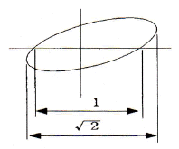
- 15°
- 30°
- 45°
- 50°
(정답률: 91%)
18. 바랙터 다이오드(Varractor Diode)는 다음 중 어떤 현상을 이용한 것인가?
- 순바이어스 된 다이오드의 중성영역에서의 전압강하
- 순바이어스 된 다이오드의 중성영역에서의 확산용량
- 역바이어스 된 다이오드에서의 애벌런치 항복
- 역바이어스 된 다이오드에서의 공간전하용량
(정답률: 63%)
19. 다음은 SSB 변조기의 기본 구성이다. □ 안에 알맞은 것은?
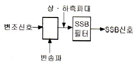
- 고주파 증폭기
- 저역필터
- 평형 변조기
- 혼합기
(정답률: 98%)
20. 자동제어에서 인디셜 응답을 조사할 때 입력에 어떤 파형을 가하는가?
- 사인파
- 펄스파
- 톱니파
- 스텝파
(정답률: 93%)
2과목: 임의구분
21. 고주파 유도가열 방식의 응용으로 볼 수 없는 것은?
- 용해로
- 가공장치
- 접착
- 표면경화장치
(정답률: 71%)
22. 다음 중 교류 전동기는?
- 유도 전동기
- 직권 전동기
- 분권 전동기
- 복권 전동기
(정답률: 90%)
23. 가동 코일형 다이내믹 마이크로폰의 구성요소가 아닌 것은?
- 고정전극
- 영구자석
- 진동판
- 보이스 코일
(정답률: 74%)
24. 크리스털 픽업(Pick Up)은 어떤 효과를 이용한 것인가?
- 홀 효과
- 광전 효과
- 압전기 효과
- 정전기 효과
(정답률: 87%)
25. 마이크로컴퓨터 시스템의 각 구성요소를 연결하는데 3대 신호버스가 아닌 것은?
- I/O Bus
- Data Bus
- Address Bus
- Control Bus
(정답률: 89%)
26. 다음 중 정현파의 파형률은?
- 1.41
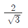
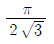
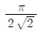
(정답률: 77%)
27. 라디오 수신기에서 여러 주파수 중에서 희망하는 방송을 선택하는 회로를 무엇이라 하는가?
- 저주파 증폭회로
- 국부 발진회로
- 동조회로
- 검파회로
(정답률: 83%)
28. 프로그램에게 주기억장치의 실제 용량보다 훨씬 더 큰 기억공간을 제공하고 운영체제에 의하여 관리되는 기억장치 시스템은?
- 캐시기억장치(cache memory)
- 가상기억장치(virtual memory)
- 모듈러기억장치(modular memory)
- 연관기억장치(associative memory)
(정답률: 95%)
29. 64[kByte]를 액세스하려면 최소 몇 개의 어드레스 선이 필요한가?
- 8
- 12
- 16
- 20
(정답률: 93%)
30. 전송하고자 하는 신호를 연속된 신호로 전송하는 것이 아니라 일정한 시간 간격으로 순간순간 신호의 진폭을 표본화하여 펄스 형태로 만든 다음에 전송하는 방식은?
- FM 통신방식
- AM 통신방식
- 펄스 통신방식
- 다중 통신방식
(정답률: 89%)
31. 그림과 같은 회로에서 부하 임피던스 Z를 얼마로 할 때 부하에 최대 전력이 공급되는가?
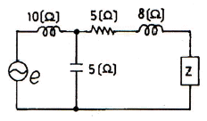
- 5+j2
- 5-j2
- 5+j8
- 5-j8
(정답률: 65%)
32. 다음 중 유도 전동기의 회전력은?
- 단자 전압에 정비례
- 단자 전압의 2승에 비례
- 단자 전압의 3승에 비례
- 단자 전압의 1/2에 비례
(정답률: 96%)
33. 다음은 D-Ff을 나타낸 것이다.
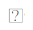
에 들어갈 적당한 gate는?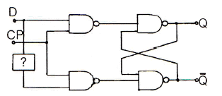
- NOT gate
- OR gate
- AND gate
- NOR gate
(정답률: 96%)
34. 0에서 29까지 셀 수 있는 리플 계수기를 만들려면 최소한 몇 개의 플립플롭(flip flop)이 필요한가?
- 2
- 3
- 5
- 7
(정답률: 79%)
35. 바닷물 속에서 초음파의 속도는 17℃에서 150[m/sec]이다. 초음파를 발사하여 왕복하는 시간이 5초가 소요되었다. 바닷물의 깊이는 몇 [m] 인가? (단, 바닷물의 온도는 깊이에 따라 일정하다.)
- 1875[m]
- 2500[m]
- 3750[m]
- 7500[m]
(정답률: 88%)
36. 둘 이상의 컴퓨터 사이에 데이터 전송을 할 수 있도록 미리 정보의 송ㆍ수신측에서 정해둔 통신규칙은?
- 프로토콜
- 링크
- 터미널
- 인터페이스
(정답률: 87%)
37. 다음 그림과 같은 회로에서 저항 R에 흐르는 전류는?
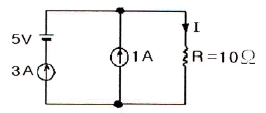
- 3[A]
- 4[A]
- 5[A]
- 6[A]
(정답률: 80%)
38. 다음 중 러시아의 바소프 등에 의해 발견된 의료용 레이저로서, 파장이 제일 짧고 저출력의 레이저는?
- CO2 레이저
- Ar 레이저
- YAG 레이저
- 엑시머 레이저
(정답률: 83%)
39. 그림과 같이 △결선을 Y결선으로 변환했을 때 Rc의 값은?
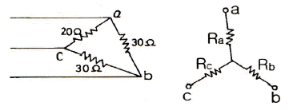
- 7.5[Ω]
- 11.2[Ω]
- 15[Ω]
- 20[Ω]
(정답률: 85%)
40. 다음 Audio system block diagram에서 (A)의 기능으로 옳은 것은?
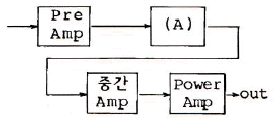
- EQ Amp
- Tone control Amp
- Speaker protector
- Powerr Supply
(정답률: 85%)
3과목: 임의구분
41. 고주파 유도 가열의 특징으로 옳지 않은 것은?
- 가열 속도가 빠르며, 발열을 필요한 부분에 집중시킬 수 있다.
- 금속의 표면 가열이 쉽게 이루어진다.
- 제품의 질을 높일 수 있다.
- 가열 장치의 설치가 용이하며, 가열 전력 요금이 저가로 된다.
(정답률: 46%)
42. 다음 제어방식 중 불연속적인 제어는?
- ON-OFF 제어
- P 제어
- PI 제어
- PID 제어
(정답률: 86%)
43. 최근에 활용되고 있는 CDP(컴팩트 디스크 플레이어)에서는 아날로그 신호를 디지털 신호로 변환하기 위해 PCM 방식을 적용하는데 아날로그 신호를 디지털 신호로 변환하는 PCM의 과정을 순서대로 나열한 것은?
- 저역필터→표본화→양자화→부호화
- 표본화→저역필터→부호화→양자화
- 표본화→부호화→양자화→저역필터
- 저역필터→양자화→표본화→부호화
(정답률: 87%)
44. 비디오 신호를 기록 재생하기 위한 조건으로 옳지 않은 것은?
- 비디오 헤드의 간격을 좁게 한다.
- 비디오 신호를 변조해서 기록한다.
- 비디오 헤드와 자기테이프의 상대속도를 크게 한다.
- 비디오 헤드와 자기테이프의 상대속도를 작게 한다.
(정답률: 59%)
45. 다음 펄스 발생 회로의 출력단 주파수는?
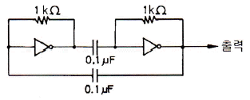
- 700[Hz]
- 350[Hz]
- 14[kHz]
- 7[kHz]
(정답률: 81%)
46. 제어계의 출력신호와 입력신호와의 비를 무엇이라 하는가?
- 미분함수
- 적분함수
- 제어함수
- 전달함수
(정답률: 87%)
47. 아날로그 신호량을 디지털 신호량으로 바꾸는 회로의 명칭은?
- 디코더 회로
- A-D 변환 회로
- D-A 변환 회로
- 인코더 회로
(정답률: 89%)
48. 스피커의 구조에서 진동계에 속하지 않은 것은?
- Voice coil
- Cone
- Damper
- Yoke
(정답률: 97%)
49. 마이크로컴퓨터에서 인터럽트를 이용하여 데이터의 입ㆍ출력을 행할 경우 데이터 하나하나에 대해 CPU가 제어하기 때문에 고속처리를 할 때는 비효율적이다. 이 문제를 해결하기 위해 CPU를 통하지 않고 입ㆍ출력 장치와 메모리 사이에서 데이터를 주고받는 방식을 무엇이라고 하는가?
- CTC
- PIPO
- DMA
- NMI
(정답률: 98%)
50. 전파 정류회로의 직류(DC) 출력 전력은 반파 정류회로에 비하여 몇 배가 되는가?
- 2배
- 4배
- 8배
- 16배
(정답률: 78%)
51. FM 라디오 수신기에서 전폭제한기는 어디에 설치하는가?
- 주파수 혼합기와 중간주파 증폭기 중간
- 중간주파 증폭기와 주파수 변별기 중간
- 주파수 변별기와 디엠퍼시스 회로 중간
- 디엠퍼시스 회로와 저주파 증폭기 중간
(정답률: 85%)
52. 다음 중 BCD 코드가 아닌 것은?
- 1011
- 1000
- 1001
- 0110
(정답률: 90%)
53. 보기의 출력 Y가 I2가 될 S1, S2의 조건은?
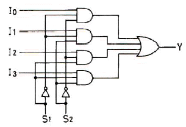
- S1=0, S2=0
- S1=0, S2=1
- S1=1, S2=0
- S1=1, S2=1
(정답률: 66%)
54. 다음 중 지구 주위의 궤도를 선회하는 인공위성을 이용하여 마이크로웨이브 통신의 중계 역할을 하며 전화 및 TV 방송 신호 등의 통신에 사용되는 방식을 무엇이라 하는가?
- 다중 통신
- 위성 통신
- 데이터 통신
- FS 통신
(정답률: 95%)
55. 다음 검사의 종류 중 검사공정에 의한 분류에 해당되지 않는 것은?
- 수입검사
- 출하검사
- 출장검사
- 공정검사
(정답률: 87%)
56. 로트 크기 1000, 부적합품률이 15[%]인 로트에서 5개의 랜덤시료 중에서 발견된 부적합품수가 1개일 확률을 이항분포로 계산하면 약 얼마인가?
- 0.1648
- 0.3915
- 0.6085
- 0.8352
(정답률: 64%)
57. Ralph M. Barnes 교수가 제시한 동작경제의 원칙 중 작업장 배치에 관한 원칙(Arrangement of the workplace)에 해당되지 않는 것은?
- 가급적이면 낙하식 운반방법을 이용한다.
- 모든 공구나 재료는 지정된 위치에 있도록 한다.
- 충분한 조명을 하여 작업자가 잘 볼 수 있도록 한다.
- 가급적 용이하고 자연스런 리듬을 타고 일할 수 있도록 작업을 구성하여야 한다.
(정답률: 83%)
58. 그림과 같은 계획공정도(Network)에서 주공정은? (단, 화살표 아래의 숫자는 활동시간을 나타낸 것이다.)
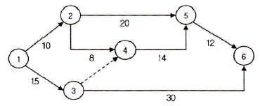
- ①-③-⑥
- ①-②-⑤-⑥
- ①-②-④-⑤-⑥
- ①-③-④-⑤-⑥
(정답률: 87%)
59. 품질코스트(quality cost)를 예방코스트, 실패코스트, 평가코스트로 분류할 때, 다음 중 실패코스트(failure cost)에 속하는 것이 아닌 것은?
- 시험 코스트
- 불량대책 코스트
- 재가공 코스트
- 설계변경 코스트
(정답률: 73%)
60. 다음 중 계량값 관리도에 해당되는 것은?
- c 관리도
- nP 관리도
- R 관리도
- u 관리
(정답률: 87%)